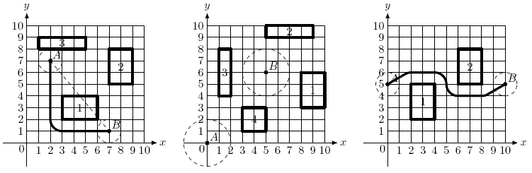

Europe - Northeastern Europe & Russian Republic - 2006/2007
| 3705 - Driving Directions Europe - Northeastern Europe & Russian Republic - 2006/2007 | ||||
| Submit | Ranking | ||||
Contrary to the popular belief, alien flying saucers cannot fly arbitrarily around our planet Earth. Their touch down and take off maneuvers are extremely energy consuming, so they carefully plan their mission to Earth to touch down in one particular place, then hover above the ground carrying out their mission, then take off. It was all so easy when human civilization was in its infancy, since flying saucers can hover above all the trees and building, and their shortest path from one mission point to the other was usually a simple straight line -- the most efficient way to travel. However, modern cities have so tall skyscrapers that flying saucers cannot hover above them and the task of navigating modern city became quite a complex one. You were hired by an alien spy to write a piece of software that will ultimately give flying saucers driving directions throughout the city. As your first assignment (to prove your worth to your alien masters) you should write a program that computes the shortest distance for a flying saucer from one point to another. This program will be used by aliens as an aid in planning of mission energy requirements.
The problem is simplified by several
facts. First of all, since flying saucer can hover above most of the
buildings, you are only concerned with locations of skyscrapers. Second,
the problem is actually twodimensional -- you can look at everything
``from above" and pretend that all objects are situated on OXY
By definition, the location of flying saucer is the location of
its center, and the length of the path it travels is the length of the
path its center travels. During its mission flying saucer can touch
skyscrapers but it cannot intersect them.
At the first picture a flying
saucer of r = 1
In the second picture it is impossible for a flying saucer
of r = 2
In the third picture flying saucer of r = 1
The input file contains several test cases, each of them as described below.
The first line of the input file contains integer numbers r
The following n
Skyscrapers neither intersect nor touch
each other. Starting and finishing points of the flying saucer's
mission are valid locations for flying saucer, that is, it does not
intersect any skyscraper in those points, but may touch some of them.
For each test case, write to the output a line with the text ``no solution" (without quotes) if
the flying saucer cannot reach its finishing point from the starting
one. Otherwise, write to the output a line with a single number -- the
shortest distance that the flying saucer needs to travel to get from the
starting point to the finishing point. Answer has to be precise to at
least 6 digits after the decimal point.

Input
 r
r 100, 0
100, 0 n
n 30)
30)
 xA, yA, xB, yB
xA, yA, xB, yB 1000)
1000)
 x1, y1, x2, y2
x1, y1, x2, y2 1000, x1 < x2, y1 < y2)
1000, x1 < x2, y1 < y2)
Output
Sample Input
1 3
2 7 7 1
3 2 6 4
7 5 9 8
1 8 5 9
2 4
0 0 5 6
8 3 10 6
5 9 9 10
1 4 2 8
3 1 5 3
1 2
0 5 10 5
2 2 4 5
6 5 8 8
Sample Output
10.570796
no solution
11.652892
Northeastern Europe & Russian Republic 2006-2007